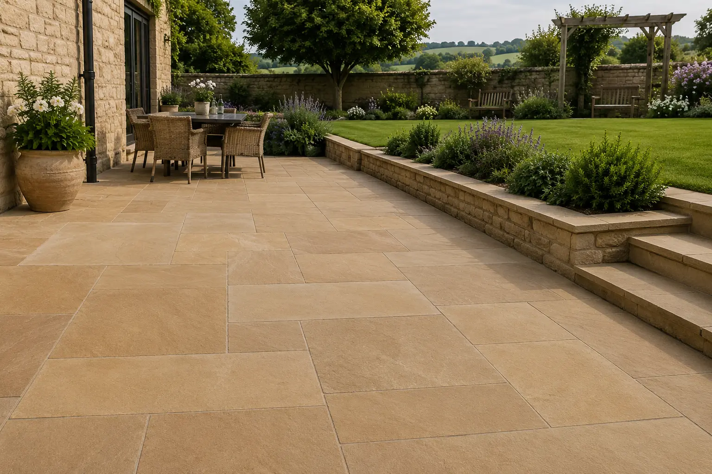
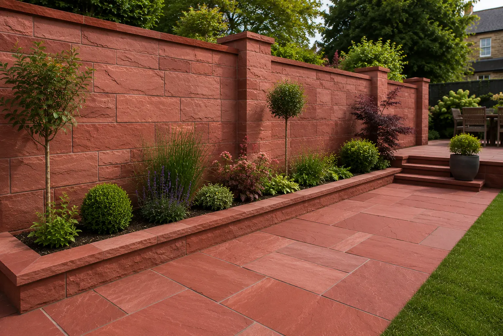
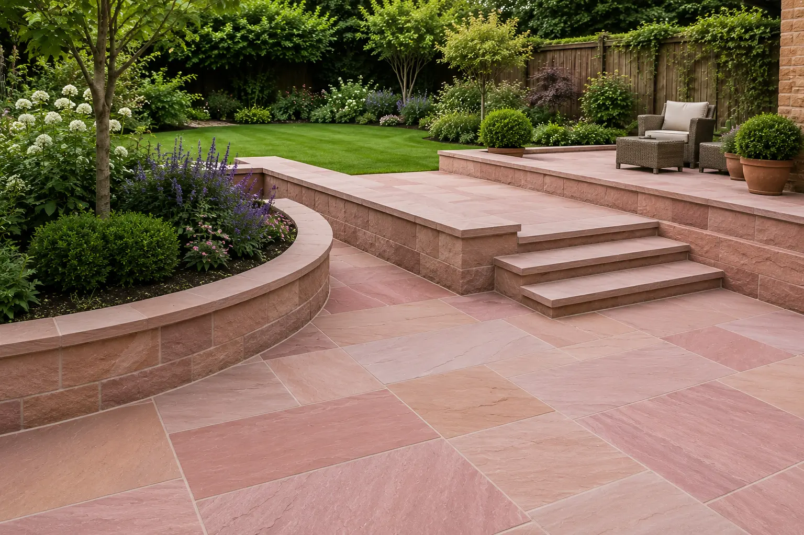

Manufacturer
Rajasthan Based Production
Packaging
Export Quality Standards
Customization
Project Specific Sizes
Global Supply
Worldwide Shipping Support
Indian Sandstone for UK Construction & Landscaping Projects
The United Kingdom is one of the largest markets for imported natural sandstone, with strong demand from landscaping companies, garden designers, builders, architects and stone merchants. Indian sandstone is widely used across residential and commercial projects because of its durability, natural beauty and versatility.
As a trusted sandstone supplier in UK, ANAY Premium Stone provides premium Indian sandstone solutions for landscaping, paving, patios, garden pathways, wall cladding and architectural projects throughout England, Scotland, Wales and Northern Ireland.
Our sandstone collections include Dholpur Beige Sandstone, Dholpur Red Sandstone and Bansi Paharpur Pink Sandstone, available in slabs, paving, tiles, wall cladding and custom project specifications.
Indian sandstone remains a preferred material for UK landscaping and construction projects because of its timeless appearance, long-term durability and suitability for outdoor environments.
ANAY Premium Stone supports UK buyers through manufacturing, quality inspection, export packaging and professional supply coordination from Rajasthan, India.
Why UK Buyers Choose ANAY Premium Stone
Architects, developers, landscape contractors, stone importers and construction companies across the UK require reliable natural stone suppliers capable of delivering consistent quality and professional project support. ANAY Premium Stone is committed to supplying premium Indian sandstone solutions tailored to the requirements of UK projects.
As a sandstone manufacturer based in Rajasthan, India, we provide direct access to some of India's most respected sandstone varieties, including Dholpur Beige Sandstone, Dholpur Red Sandstone and Bansi Paharpur Pink Sandstone.
Direct Quarry Sourcing
Our access to premium sandstone sources enables consistent material selection, colour consistency and reliable supply for residential, commercial and landscaping projects.
Quality Inspection & Processing
Every order undergoes careful inspection during production to ensure dimensional accuracy, finish consistency and compliance with project specifications.
Export Packaging for International Projects
Products are packed using export-grade packaging methods designed to minimise damage during transportation, handling and container shipment.
Custom Sizes & Project Solutions
We supply sandstone slabs, tiles, paving, wall cladding, pool coping, kerbstones, steps and customised architectural stone products according to project requirements.
Support for UK Construction & Landscape Projects
From landscaping projects and garden developments to commercial projects and public spaces, ANAY Premium Stone supports UK buyers with premium sandstone solutions designed for durability, beauty and long-term performance.
Premium Collection
Dholpur Beige Sandstone Supplier in UK

Dholpur Beige Sandstone is one of the most popular natural stones used in patios, garden paving, landscaping projects, residential developments and commercial outdoor spaces across the UK
Its warm beige tones, elegant appearance and excellent durability make it a preferred choice for architects and developers seeking premium natural stone solutions for both contemporary and traditional designs.
As a trusted sandstone supplier in UK, ANAY Premium Stone supplies premium quality Dholpur Beige Sandstone in slabs, tiles, paving stones, wall cladding, pool coping, steps and customised project specifications.
The stone performs exceptionally well in outdoor environments and is widely used for courtyards, pathways, facades, pool surrounds, garden landscaping and luxury residential developments throughout England, Scotland, Wales and Northern Ireland.
International buyers choose Dholpur Beige Sandstone because of its natural beauty, low maintenance requirements, long-term durability and timeless architectural appeal.
Learn more about our Dholpur Beige Sandstone collection, finishes, specifications and export options.
Premium Collection
Dholpur Red Sandstone Supplier in UK

Dholpur Red Sandstone is recognised for its rich natural red colour, architectural character and exceptional durability. It is widely used in luxury villas, hospitality developments, landscape projects and commercial architecture across the UK.
The stone's distinctive appearance creates a strong visual impact while maintaining the durability required for outdoor and high-traffic environments.
As a premium sandstone supplier in UK, ANAY Premium Stone supplies Dholpur Red Sandstone in paving, wall cladding, steps, coping stones, slabs and customised project dimensions.
The material is particularly suitable for courtyards, pathways, feature walls, villa entrances, landscape architecture and commercial developments seeking a timeless natural stone appearance.
Its strength, weather resistance and low maintenance requirements make Dholpur Red Sandstone a preferred choice for architects and developers throughout the United Kingdom.
Explore our Dholpur Red Sandstone specifications, finishes and project applications.
Premium Collection
Bansi Paharpur Pink Sandstone Supplier in UK

Bansi Paharpur Pink Sandstone is one of India's most prestigious natural stones and is admired worldwide for its elegant pink colour, refined texture and long-term durability.
Architects and developers specify Bansi Paharpur Pink Sandstone for luxury villas, hospitality projects, public spaces and premium landscape developments where aesthetics and durability are equally important.
ANAY Premium Stone supplies Bansi Paharpur Pink Sandstone in slabs, paving stones, tiles, wall cladding, coping stones and customised project specifications for UK buyers.
Its timeless appearance complements both contemporary and classical architecture, making it a popular material for high-end developments across the United Kingdom.
The stone offers excellent weather resistance, strength and architectural appeal, making it suitable for both interior and exterior applications.
Learn more about our Bansi Paharpur Pink Sandstone collection and export solutions.
Applications of Indian Sandstone in UK Landscaping Projects
Indian sandstone is one of the most popular natural stone materials used throughout the United Kingdom for landscaping, paving and outdoor living spaces.
Patios & Garden Paving
Indian sandstone is widely used for patios, terraces and garden paving because of its natural appearance, durability and wide range of colours.
Garden Pathways
Landscape designers and homeowners use sandstone for pathways and walkways that create attractive outdoor environments.
Residential Landscaping
Sandstone complements both modern and traditional British homes and is frequently used in gardens, courtyards and outdoor living spaces.
Public Spaces & Parks
Local authorities and landscape contractors use sandstone for public realm projects, parks and pedestrian areas requiring long-term durability.
Commercial Developments
Hotels, offices, retail developments and mixed-use projects use sandstone for paving, landscape features and architectural elements.
Export Process for UK Buyers
ANAY Premium Stone follows a structured process to ensure quality, consistency and reliable delivery for UK projects.
- Selection of premium sandstone from Rajasthan.
- Precision cutting and processing according to project requirements.
- Quality inspection during production.
- Final dimensional and visual inspection.
- Export-grade packaging and pallet preparation.
- Container loading and shipment coordination.
- Documentation support for international buyers.
- Delivery support for UK importers, contractors and project developers.
This process helps ensure that sandstone products arrive ready for installation while maintaining the quality standards expected by professional buyers.
From Rajasthan Quarries to UK Projects
ANAY Premium Stone manages the sandstone supply process from source selection through manufacturing and export preparation. Our focus on quality control and project support helps ensure reliable sandstone supply for architects, contractors, developers and importers across the UK.
Our operations include sandstone sourcing, production, inspection, packaging and shipment coordination to support residential, commercial and landscaping projects.
Through careful material selection and professional manufacturing processes, we supply Dholpur Beige Sandstone, Dholpur Red Sandstone and Bansi Paharpur Pink Sandstone for a wide range of architectural applications.
Manufacturing & Export Infrastructure
Sandstone Quarry Operations

ANAY Premium Stone works with premium sandstone sources in Rajasthan, India's leading natural stone region. Access to quality raw materials supports consistent colour selection, reliable availability and professional supply for international projects.
Precision Stone Processing

Our manufacturing process includes cutting, processing and inspection to meet project-specific requirements. We support architects, contractors and importers with sandstone products prepared according to project specifications.
Export Packaging & Shipment Preparation

Export-grade packaging is used to help protect sandstone during handling, transportation and international shipment. This supports safe delivery for commercial, residential and landscaping projects across the UK.
Why Import Sandstone from India to UK?
India is one of the world's leading natural stone producers and is recognised internationally for its premium sandstone varieties. UK buyers benefit from access to a wide range of colours, finishes and architectural stone solutions suitable for residential, commercial and landscape projects.
Indian sandstone combines durability, aesthetic appeal and long-term value, making it a preferred material for luxury villas, hospitality developments, commercial projects and public spaces throughout the UK.
ANAY Premium Stone supports UK buyers with Dholpur Beige Sandstone, Dholpur Red Sandstone and Bansi Paharpur Pink Sandstone supplied directly from Rajasthan, India.
Sandstone Supply Across UK
ANAY Premium Stone supplies premium Indian sandstone for projects throughout England, Scotland, Wales and Northern Ireland.
Our sandstone products are suitable for landscapers, builders, architects, stone merchants and importers seeking reliable sandstone supply from India.
- Sandstone Supplier England
- Sandstone Supplier Scotland
- Sandstone Supplier Wales
- Sandstone Supplier Northern Ireland
- Indian Sandstone Supplier UK
- Sandstone Exporter to UK
Frequently Asked Questions – Sandstone Supplier UK
Who is a trusted sandstone supplier in UK?
ANAY Premium Stone supplies premium Indian sandstone including Dholpur Beige Sandstone, Dholpur Red Sandstone and Bansi Paharpur Pink Sandstone for residential, commercial and landscaping projects across the UK.
Do you export sandstone to the United Kingdom?
Yes. ANAY Premium Stone supports landscapers, builders, architects, stone merchants and importers throughout the United Kingdom.
Can I import sandstone directly from India to UK?
Yes. ANAY Premium Stone supplies sandstone directly from Rajasthan, India to buyers across UK with export packaging, documentation support and shipment coordination.
Which sandstone is best for patios and landscaping projects in UK?
Dholpur Beige Sandstone is one of the most popular choices for patios, garden paving, pathways and landscaping projects because of its durability, natural appearance and suitability for outdoor environments.
Can sandstone be used for UK climate conditions?
Yes. Indian sandstone is widely used throughout the UK because it performs well in outdoor environments and is suitable for patios, pathways, paving and landscaping projects.
What sandstone products do you supply?
We supply slabs, tiles, paving stones, wall cladding, coping stones, steps, kerbstones and customised project specifications.
Do you provide custom sizes?
Yes. Products can be manufactured according to project dimensions and architectural requirements.
What is Dholpur Beige Sandstone used for?
Dholpur Beige Sandstone is commonly used for luxury villas, hospitality projects, landscape developments, paving and wall cladding.
What is Dholpur Red Sandstone used for?
Dholpur Red Sandstone is used for pathways, facades, feature walls, landscaping and architectural projects requiring a strong natural appearance.
Why choose Bansi Paharpur Pink Sandstone?
Bansi Paharpur Pink Sandstone is valued for its elegant colour, durability and suitability for premium architectural applications.
How can I request a quotation?
Contact ANAY Premium Stone with project details, quantities and specifications. Our team will review your requirements and provide suitable recommendations and pricing.
Explore More Sandstone Solutions
Explore Our Premium Sandstone Collections
International Sandstone Supply Solutions
Explore our dedicated country-specific sandstone supply pages designed for architects, importers, contractors and project developers across major international markets.
About ANAY Premium Stone
ANAY Premium Stone is a sandstone manufacturer and exporter based in Rajasthan, India. We specialize in supplying premium Indian sandstone products including Dholpur Beige Sandstone, Dholpur Red Sandstone and Bansi Paharpur Pink Sandstone for architectural, landscaping and construction projects.
Our sandstone products are supplied to architects, contractors, developers, landscape professionals, importers and distributors seeking durable and aesthetically refined natural stone solutions.
The company supports international projects through manufacturing, quality inspection, export packaging and professional supply coordination from India.
ANAY Premium Stone serves buyers across England, Scotland, Wales and Northern Ireland with premium sandstone products suitable for landscaping, paving and construction projects.
Sandstone Applications Across the United Kingdom
Indian sandstone is widely used throughout the United Kingdom for residential landscaping, patio construction, garden paving and commercial outdoor spaces.
- Patios & Outdoor Living Areas
- Garden Paving
- Landscape Architecture
- Residential Developments
- Public Parks & Walkways
- Commercial Landscaping
- Courtyards & Pathways
- Natural Stone Features
Why UK Landscapers & Architects Choose Indian Sandstone
Landscape professionals, architects and builders throughout the United Kingdom continue to specify Indian sandstone because of its durability, versatility and natural appearance.
Dholpur Beige Sandstone, Dholpur Red Sandstone and Bansi Paharpur Pink Sandstone are widely used for patios, pathways, landscaping projects and residential developments where long-term performance and aesthetics are important.
Request a Quote for UK Sandstone Projects
Looking for a reliable sandstone supplier for projects in UK? ANAY Premium Stone supplies premium Indian sandstone for patios, landscaping projects, garden paving, residential developments and commercial projects throughout the United Kingdom.
Contact our export team for pricing, technical specifications,
samples and container shipment details.
Request a Quote
About ANAY Premium Stone
ANAY Premium Stone is a premium sandstone manufacturer
and exporter based in Rajasthan, India.
We specialize in Dholpur Beige Sandstone,
Dholpur Red Sandstone and Bansi Paharpur Pink Sandstone
for architectural, landscaping and commercial projects worldwide.
- Location: Rajasthan, India
- Phone: +91 77328 65515
- Email: info@anaypremiumstone.com
- Alternate Email: anaypremiumstone@gmail.com
- Industry: Natural Stone Manufacturing
- Export Markets: UAE, UK, USA, Europe, Australia
- Products: Sandstone Slabs, Tiles, Paving, Wall Cladding, Steps & Risers